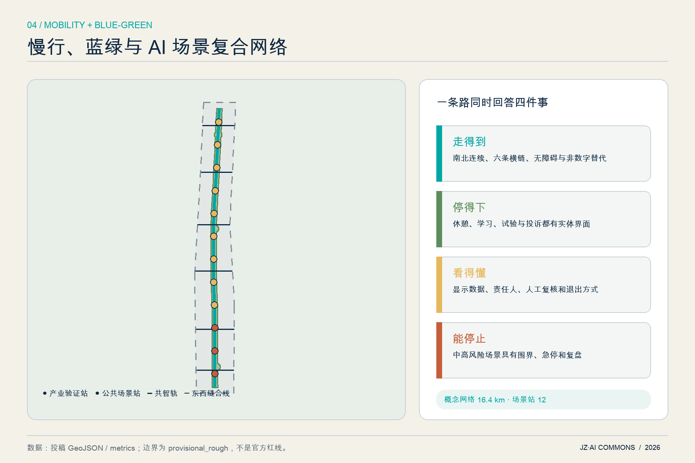

众智园 · 全栈验证港
模型体检、端侧能耗和机器人共行在受控试验庭完成。公共界面展示方法和风险，不展示敏感数据。
一轨三港两翼十二站。把测试、人工复核、公众反馈、独立审计和开放复用组织成一条可学习的城市公共创新脊柱。
地图聚焦总体设计范围；统筹研究范围用于区域协同，重点区域用于方向性小方案。虚线只表示临时约束，设计主线是连续公共脊柱、三处差异化创新港和六条东西缝合线。
分类代码来自本地国土空间用地分类子集；分区是参考方案，不构成已批用途。
模型体检、端侧能耗和机器人共行在受控试验庭完成。公共界面展示方法和风险，不展示敏感数据。
用成果转化门诊连接高校、创业者、居民和公共服务；“开源原点”记录可撤回的公共贡献。
透明体验、纠错、退出和投诉构成智能体服务市场；四象限步行只表达连接优先级。

十二个建筑 footprint 只表达可逆空间原型，不对应现状建筑或拆改留。九类更新项目按“前置条件—小规模原型—评估—退出或扩展”推进；缺 official 数据时只做桌面研究或可撤除原型。
| 证据 | 当前状态 | 解释 |
|---|---|---|
| 公告 + agent 任务 | 23 / 23 响应 | compliance_matrix.json 定位到正文、图层、指标、图纸和可视化。 |
| mandatory 标准 | 5 / 5 addressed | 标准只支持其允许用途，不生成项目专属法定控制。 |
| formal 设计深度 | 15 / 15 complete | 缺失控制以 unknown、专业门槛和升级路径完成表达。 |
| UNKNOWN | FAR / 高度 / 密度 / 道路 / 四线 | 不从概念建筑或临时边界反推审定指标。 |
官方公告、清权任务书、城市设计办法、控规办法、用地分类指南。
仓库临时总体边界与三处重点区 polygon，仅用于生成、展示和 intake。
one-north、Kendall、MaRS、Paris-Saclay、Knowledge Quarter、Seoul AI Hub、Mila 的机构一手页面。
商业地图、新闻示意图、远程图片、非公开数据、企业内部数据和个人隐私。
官方边界、控规、现状建筑/权属、道路断面、文保控制、市政安全和运营资源尚缺。地标、建筑、道路、活动与分期均为概念建议；正式推进前需规划、建筑、交通、市政、消防、文保、无障碍、数据保护与公众参与复核。